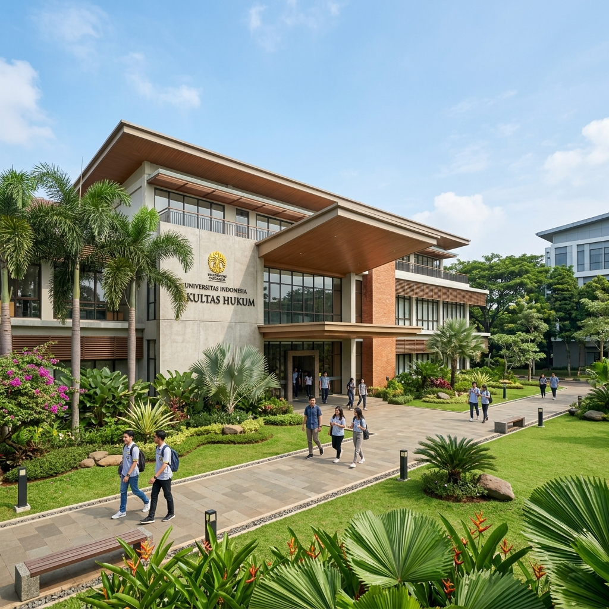
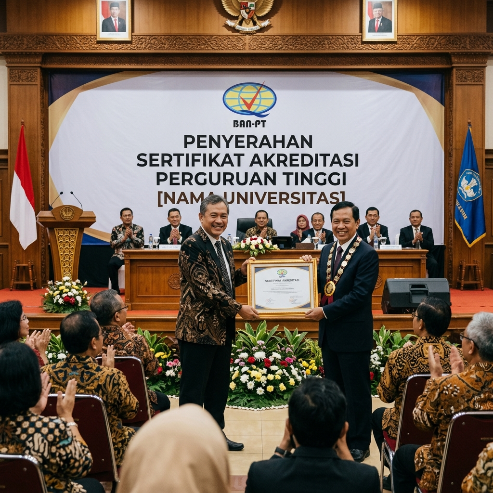
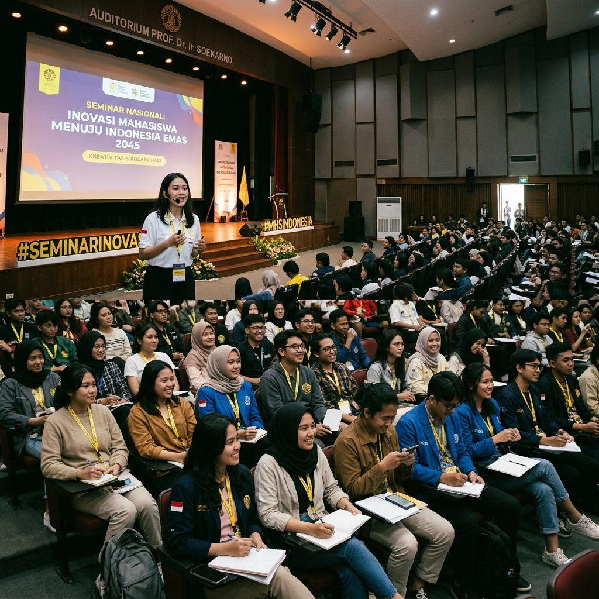

Program Studi Sistem Informasi (SI) merupakan salah satu program studi yang berada di bawah naungan Fakultas Teknologi Informasi (FTI) Universitas Informatika dan Bisnis Indonesia (UNIBI). Program studi ini berdiri sejak tahun 2005 dan telah terakreditasi B oleh BAN-PT.
Prodi SI UNIBI menghasilkan lulusan yang mampu merancang, mengembangkan, dan mengelola sistem informasi berbasis teknologi yang mendukung proses bisnis organisasi secara efektif dan efisien.
Menjadi program studi yang unggul, inovatif, dan berdaya saing tinggi dalam bidang Sistem Informasi di tingkat nasional pada tahun 2030, dengan mengintegrasikan ilmu pengetahuan teknologi dan nilai-nilai etika profesional untuk menghasilkan lulusan yang mampu berkontribusi dalam era digitalisasi.

AkreditasiProgram Studi Sistem Informasi FTI UNIBI kembali meraih akreditasi B dari Badan Akreditasi Nasional Perguruan Tinggi (BAN-PT). Pencapaian ini merupakan bukti komitmen prodi dalam meningkatkan mutu pendidikan.
Baca Selengkapnya
KegiatanProdi SI UNIBI sukses menggelar Seminar Nasional dengan menghadirkan narasumber dari berbagai perguruan tinggi ternama dan praktisi industri teknologi informasi nasional.
Baca SelengkapnyaKegiatan ORDIK (Orientasi Disiplin dan Kepribadian) Mahasiswa Baru Prodi SI UNIBI dilaksanakan selama tiga hari dan diikuti oleh 250 mahasiswa baru angkatan 2025.
Baca SelengkapnyaTim mahasiswa Prodi SI UNIBI berhasil meraih Juara 1 dalam kompetisi Hackathon Nasional yang diselenggarakan oleh Kementerian Kominfo RI dengan solusi aplikasi berbasis AI.
Baca SelengkapnyaDidukung oleh dosen-dosen berpengalaman dan berdedikasi dalam bidang Sistem Informasi dan Teknologi Informasi.
Prodi SI UNIBI menjalin kerjasama strategis dengan berbagai perusahaan dan lembaga untuk mendukung pengembangan kurikulum dan peluang karir mahasiswa.
Daftarkan diri Anda sekarang dan raih masa depan cerah bersama kami.